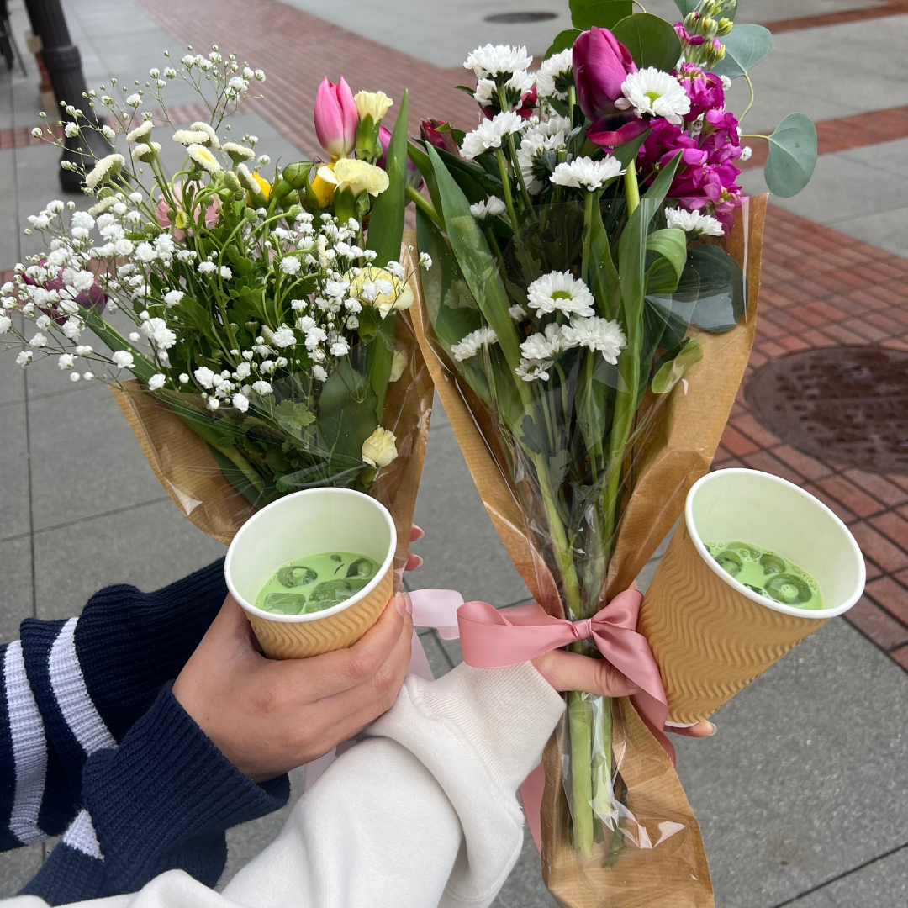
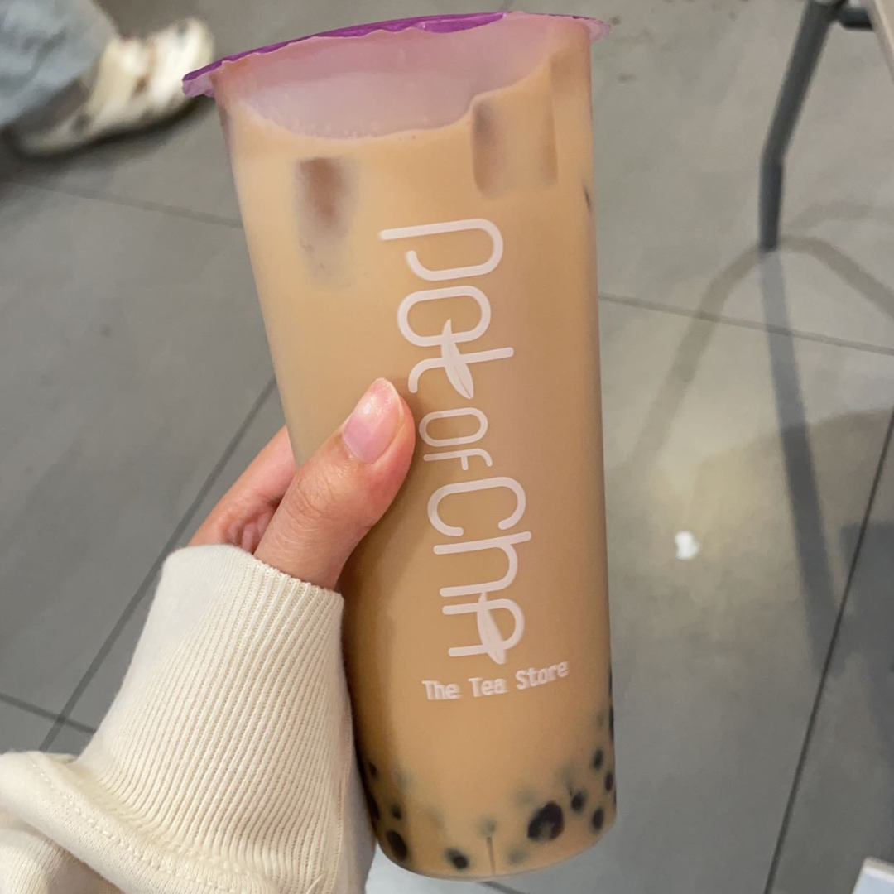
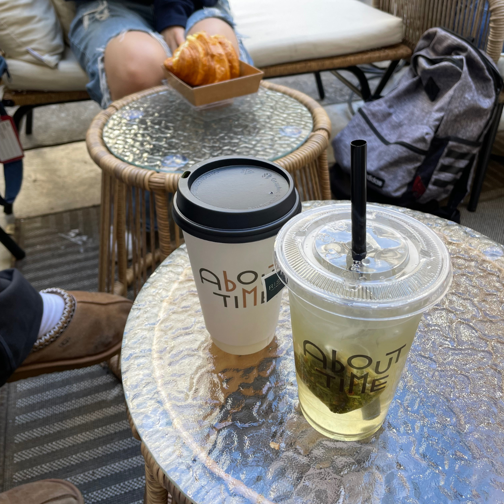
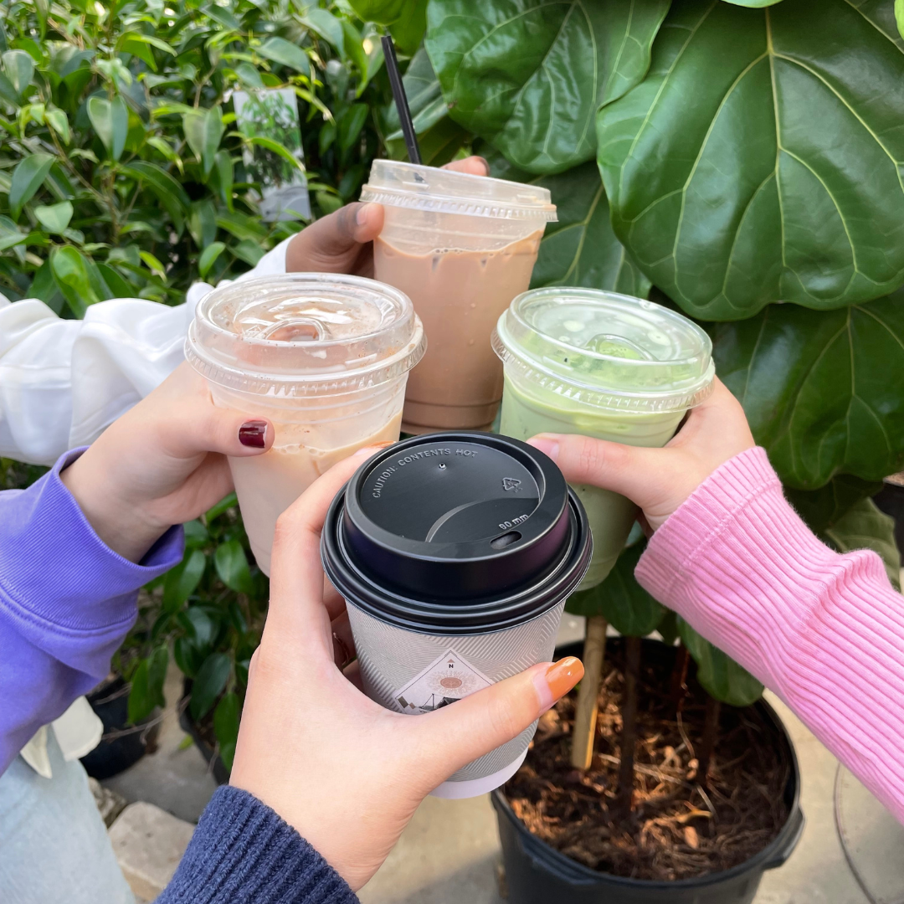
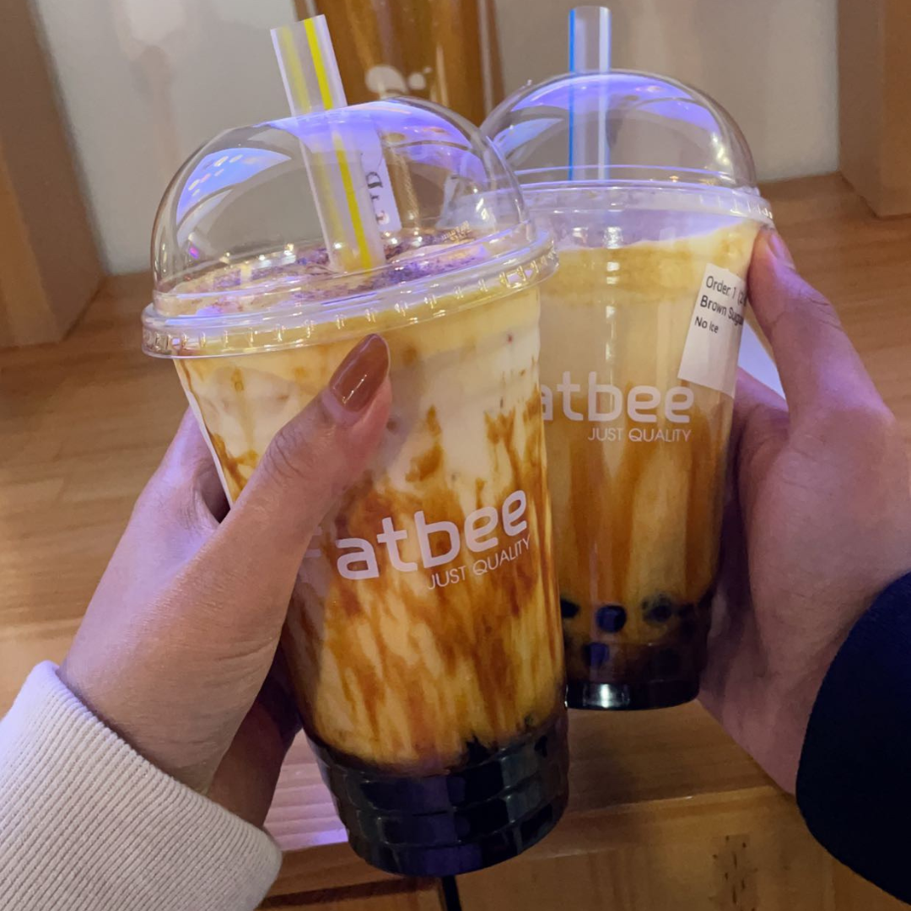

dulce
>>>>> / >>>>>
$$ / $$$$
ahhh dulce dulce dulce. if i could write a love letter to this cafe i would, and i'd send it because i like basically right on top of it. for the longest time, my go to order from here was the oreo cheesecake (which is amazing and such a good deal for the price), but once i tried the blueberry matcha, i was hooked! every time i go to dulce, the blueberry matcha is my go-to order. their matcha is one of the first times i had matcha, and it did not disappoint! i've also heard amazing things about basically all of their bakery items.

pot of cha
>>>> / >>>>>
$$ / $$$$
pot of cha is my absolute go to spot when it comes to pretty much anything: late night study sesh, post-exam sweet treat, because it's so close to campus and soooooo good every single time. my favorites are the assam milk tea with pearls or the brown sugar fresh milk, also with pearls! i would recommend the taro fresh milk if you like the flavor and texture of real taro, but if you like your taro artificially purple, i would try something else on the menu.

about time
>>> / >>>>>
$$$ / $$$$
i did not have the best experience at about time, but that was probably partially my fault. see, i went on an exceptionally busy sunday afternoon, where the only seating available was outside the cafe. there were heaters, but no amount of heaters could make up for the chilly los angeles breeze, especially when i was trying to lock in on studying for an exam! i tried the iced yuzu peach green tea and it didn't really impress me for the price i paid for the drink.

equinox cafe
>>>> / >>>>>
$ / $$$$
i was originally going to give this place 3 stars, but it deserves an extra star for just how beautiful the cafe is. the cafe is situated inside of a greenhouse, and the plants and other pieces around the space are absolutely gorgeous and so fun to sit with as you enjoy your drink. i got a peppermint hot chocolate, because i visited on a freezing cold kansas winter day, and it warmed me right up! they also had amazing iced tea and juice drinks that looked absolutely gorgeous.

fat bee
>>> / >>>>>
$$ / $$$$
fat bee is an old favorite from my hometown; a bubble tea store that opened when i was in 6th grade. i have fond memories of working here after school in 8th grade with some of my best friends, and i think its those sweet sweet memories that have kept me coming back for so long. their drinks are delicious, though i'd argue on the pricier side, but their boba pearls are usually not as chewy as i'd prefer. nonetheless though, for boba in kansas, they're a solid choice.